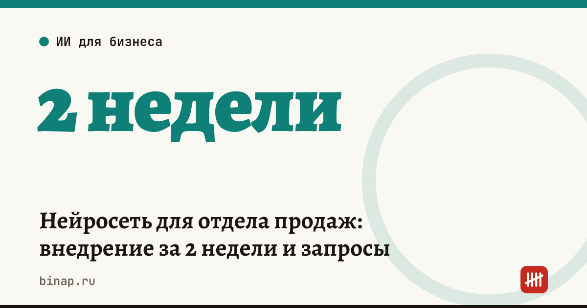

Нейросеть для отдела продаж: внедрение за 2 недели и запросы

Менеджер по продажам тратит заметную часть дня не на клиентов, а на отчёты: перенести итоги звонка в CRM, написать письмо-КП, объяснить руководителю, почему сделка зависла. По данным колонки руководителя IT-компании на vc.ru, такая рутина занимала 15–20 минут на каждый лид. Нейросеть берёт её на себя, если правильно поставить задачу и оставить решения человеку.
Коротко
- Нейросеть в продажах — это помощник менеджера, а не замена: она делает черновики, человек проверяет и решает.
- Лучшие первые задачи: резюме звонка, черновик КП, ответы на типовые возражения, разбор причин отказов.
- Внедрение в небольшом отделе — за две недели: неделя проб на одном менеджере, неделя на всех с общими запросами.
- Персональные данные клиентов в обычные чат-боты не отправляйте — обезличивайте расшифровки.
- Пользу считайте в минутах на лид и в конверсии, а не во впечатлениях.
Сроки, изменения и разборы для ИП и самозанятых — каждое утро в Telegram и MAX. Подпишитесь, чтобы не пропустить.
Что отдать нейросети, а что оставить человеку
| Нейросети | Человеку |
|---|---|
| резюме звонка: потребность, бюджет, сроки, возражения | решение о цене, скидке и сроках |
| черновик письма-КП | финальный текст КП и отправка |
| варианты ответов на возражения | разговор с клиентом |
| разбор причин отказов за месяц | выводы и изменения в процессе |
| напоминание о следующем шаге | договорённости с клиентом |
Внедрение за 2 недели
Неделя 1 — пробуем на одном менеджере. 1. Выберите сотрудника, который сам хочет попробовать. 2. Каждый день он делает 3–5 резюме звонков и 1–2 черновика КП с запросами ниже. 3. Записывайте, сколько минут ушло раньше и сколько теперь, и где нейросеть ошиблась.
Неделя 2 — переносим на отдел. 1. Соберите 3–4 запроса, которые сработали, в общую памятку. 2. Добавьте правила: что нельзя отправлять в нейросеть и что проверять перед отправкой клиенту. 3. Через неделю сравните время на лид и конверсию из звонка в КП с прошлым месяцем.
Готовые запросы
Резюме звонка и черновик КП:
«Ты — помощник менеджера по продажам. Вот расшифровка звонка без имён и телефонов: [текст]. Выдели: что хочет клиент, его бюджет и сроки, возражения, договорённости и следующий шаг с датой. Затем составь черновик письма-КП на 5–7 предложений. Не придумывай цены и сроки: где данных нет, пиши [уточнить]».
Ответы на возражения:
«Мы продаём [что] для [кого]. Клиенты часто говорят: «дорого», «подумаем», «у конкурента дешевле». Для каждого возражения предложи 3 коротких ответа на «вы», без давления и без обещаний скидки. Мы не делаем скидки без согласования — не предлагай их».
Разбор отказов за месяц:
«Ниже причины отказов клиентов за [месяц] без персональных данных. Сгруппируй их по 5–7 причинам, посчитай долю каждой и предложи, что изменить в скрипте или предложении по трём главным. Если причина непонятна — отнеси в «нет данных»».
Правила, без которых будет хуже
- Обезличивание. Перед отправкой уберите из расшифровки имена, телефоны, адреса и реквизиты клиентов. Для сервисов, которые постоянно работают с данными клиентов (запись и расшифровка всех звонков), обсудите с юристом требования закона о персональных данных.
- Ограничения в запросе. Прямо пишите, чего нельзя: «не предлагай скидки», «не обещай сроки». Без этого нейросеть додумает условия, которых у вас нет.
- Проверка перед отправкой. Цифры, цены и сроки в письме клиенту всегда проверяет менеджер.
Как понять, что внедрение окупилось
Расчёт редакции, цифры условные: три менеджера, по 10 лидов в день. Если отчёт и КП по лиду занимали 15 минут, а с нейросетью — 5, экономия — 10 минут × 30 лидов = 5 часов в день на отдел. Эти часы — дополнительные звонки. Сравните конверсию и выручку с прошлым месяцем: если они не выросли, время ушло не в продажи.
Где ещё теряются клиенты — в статьях воронка продаж для малого бизнеса и скрипт первого звонка. Как посчитать, окупается ли реклама, которая приводит лиды, — в разборе CAC, LTV и ROMI.
Частые вопросы
Может ли нейросеть заменить менеджера по продажам? Нет. Она берёт на себя черновики и отчёты, а разговор с клиентом, цена и договорённости остаются за человеком.
Можно ли отправлять в нейросеть записи звонков с клиентами? Только без персональных данных: имена, телефоны и реквизиты уберите перед отправкой. Для постоянной обработки звонков сервисом обсудите требования закона с юристом.
Сколько времени занимает внедрение? В небольшом отделе — около двух недель: неделя проб на одном сотруднике и неделя на всех с общими запросами и правилами.